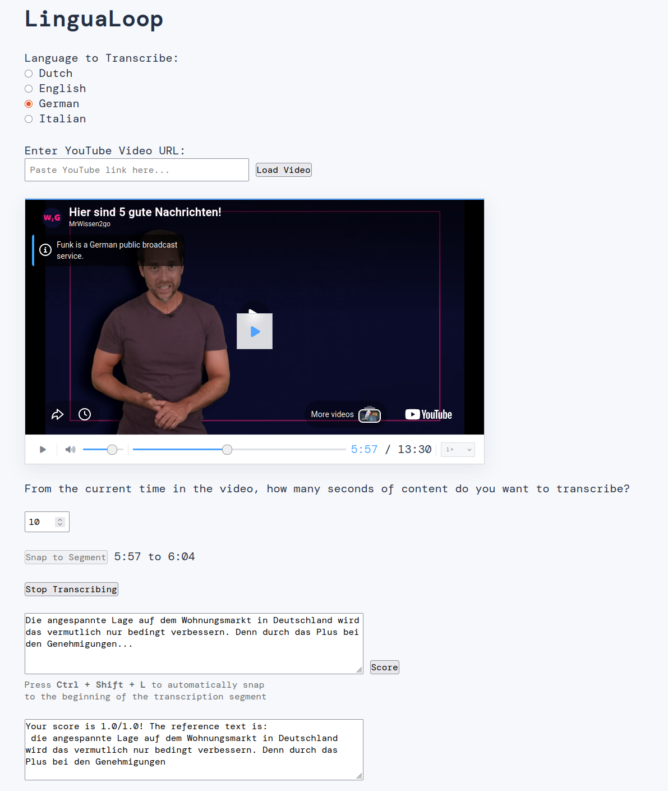

Welcome to lingua-loop’s documentation!
A web application to train your listening skills by transcribing real speech from YouTube videos.

Installation
You need Python version 3.12 or higher. It’s recommended to create a dedicated virtual environment first.
Using conda:
conda create --name lingua-loop python=3.12
conda activate lingua-loop
Using venv on Windows:
python -m venv .venv_lingua_loop
.\.venv_lingua_loop\Scripts\activate
Using venv on Linux/macOS:
python -m venv .venv_lingua_loop
. .venv_lingua_loop/bin/activate
Then install the package:
pip install lingua-loop
The package is also installable directly from the repository:
pip install git+https://github.com/jfdev001/lingua-loop.git
For a faster install using the uv package manager:
uv pip install git+https://github.com/jfdev001/lingua-loop.git
Note
This package is under active development and updated frequently.
Usage
Launch the app (which will open a web browser automatically):
lingua-loop